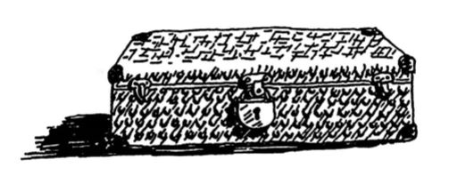

Рекурсия
Допустим, вы разбираете чулан своей бабушки и натыкаетесь на загадочный запертый чемодан.
Бабушка говорит, что ключ к чемодану, скорее всего, лежит в коробке.
В коробке лежат другие коробки, а в них лежат маленькие коробочки. Ключ находится где-то там. Какой алгоритм поиска ключа предложите вы?
Одно из решений может выглядеть так:
- Сложить все коробки в кучу.
- Взять коробку и открыть.
- Если внутри лежит коробка, добавить ее в кучу для последующего поиска.
- Если внутри лежит ключ, поиск закончен!
- Повторить.
Есть и альтернативное решение.
- Просмотреть содержимое коробки.
- Если вы найдете коробку, вернуться к шагу 1.
- Если вы найдете ключ, поиск закончен!
Какое решение кажется вам более простым?
Оба решения делают одно и то же, но второе решение кажется мне более понятным. Рекурсия применяется тогда, когда решение становится более понятным. Применение рекурсии не ускоряет работу программы: более того, решение с циклами иногда работает быстрее.
Базовый случай и рекурсивный случай
Так как рекурсивная функция вызывает сама себя, программисту легко ошибиться и написать функцию так, что возникнет бесконечный цикл. Предположим, вы хотите написать функцию для вывода обратного отсчета:
> 3...2...1
Ее можно записать в рекурсивном виде:
function countDown(i) {
console.log(i)
countDown(i-1);
}
countDown(3);
И тут возникает проблема: эта функция выполняется бесконечно!
> 3...2...1...0...-1...-2...
Когда вы пишете рекурсивную функцию, в ней необходимо указать, в какой момент следует прервать рекурсию. Вот почему каждая рекурсивная функция состоит из двух частей: базового случая и рекурсивного случая. В рекурсивном случае функция вызывает сама себя. В базовом случае функция себя не вызывает... чтобы предотвратить зацикливание.
Добавим базовый случай в функцию countDown:
function countDown(i) {
console.log(i)
if(i <= 0) //Базовый случай
return
else //Рекурсивный случай
countDown(i-1);
}
countDown(3);
Теперь функция работает так, как было задумано.
Стек
В этом разделе рассматривается стек вызовов. Концепция стека вызовов играет важную роль в программировании вообще; кроме того, ее важно понимать при использовании рекурсии.
Предположим, вы устраиваете вечеринку с барбекю. Вы составляете список задач и записываете дела на листках.
Задачи, то есть элементы списка, можно добавлять и удалять в произвольных позициях списка. Стопка листков работает куда проще. Новые (вставленные) элементы добавляются в начало списка, то есть на верх стопки. Читается только верхний элемент, и он исключается из списка. Таким образом, список задач поддерживает всего два действия: занесение (вставка) и извлечение (выведение из списка и чтение.)
Посмотрим, как работает список задач:
Такая структура данных называется стеком. Стек - простая структура данных.
Стек вызовов
Во внутренней работе вашего компьютера используется стек, называемый стеком вызовов. Давайте посмотрим, как он работает. Предположим, имеется простая функция:
const greet = (name) => {
console.log(`Hello, ${name}!`);
greet2(name);
console.log('Getting ready to say bye...');
bye();
}
Эта функция приветствует вас, после чего вызывает две другие функции. Вот эти две функции:
const greet2 = (name) => {
console.log(`How are you, ${name}?`);
}
const bye = () => {
console.log('Ok bye!');
}
Разберемся, что происходит при вызове функции.
Предположим, в программе используется вызов greet("maggie"). Сначала ваш компьютер выделяет блок памяти для этого вызова функции.
Затем эта память используется. Переменной name присваивается значение "maggie"; оно должно быть сохранено в памяти.
Каждый раз, когда вы вызываете функцию, компьютер сохраняет в памяти значения всех переменных для этого вызова. Далее выводится приветствие hello, maggie!, после чего следует второй вызов greet2("maggie"). И снова компьютер выделяет блок памяти для вызова функции.

Ваш компьютер объединяет эти блоки в стек. Второй блок создается над первым. Вы выводите сообщение how are you, maggie?, после чего возвращаете управление из вызова функции. Когда это происходит, блок на вершине стека извлекается из него.
Теперь верхний блок в стеке относится к функции greet; это означает, что вы вернулись к функции greet. При вызове функции greet2 функция greet еще не была завершена. Здесь-то и скрывается истинный смысл этого раздела: когда вы вызываете функцию из другой функции, вызывающая функция приостанавливается в частично завершенном состоянии. Все значения переменных этой функции остаются в памяти. А когда выполнение функции greet2 будет завершено, вы вернетесь к функции greet и продолжите ее выполнение с того места, где оно прервалось. Сначала выводится сообщение getting ready to say Ьуе..., после чего вызывается функция bуе.
Блок для этой функции добавляется на вершину стека. Далее выводится сообщение ok bуе! с выходом из вызова функции.
Управление снова возвращается функции greet. Делать больше нечего, так что управление возвращается и из функции
Стек вызовов с рекурсией
Рекурсивные функции тоже используют стек вызовов! Посмотрим, как это делается, на примере функции вычисления факториала. Вызов factorial(5) записывается в виде 5! и определяется следующим образом: 5! = 5*4*3*2*1. По тому же принципу factorial(З) соответствует 3*2*1. Рекурсивная функция для вычисления факториала числа выглядит так:
const fact = (x) => {
if(x == 1)
return 1;
else
return x * fact(x-1);
}
В программу включается вызов fact(З). Проанализируем этот вызов строку за строкой и посмотрим, как изменяется стек вызовов. Стоит напомнить, что верхний блок в стеке сообщает, какой вызов fact является текущим.
Здесь важно, что каждый вызов создает собственную копию х. Обратиться к переменной х, принадлежащей другой функции, невозможно.
Стек играет важную роль в рекурсии. В начальном примере были представлены два решения поиска ключа. Вспомните, как выглядел первый:
В этом случае все коробки лежат в одном месте и вы всегда знаете, в каких коробках еще нужно искать ключ.
Но в рекурсивном решении никакой кучи не существует.
Если кучи нет, то как ваш алгоритм узнает, в каких коробках еще нужно искать? Пример:
К этому моменту стек вызовов выглядит примерно так:
"Куча коробок" хранится в стеке! Это стек незавершенных вызовов функции, каждый из которых ведет собственный незаконченный список коробок для поиска. Стек в данном случае особенно удобен, потому что вам не нужно отслеживать коробки самостоятельно - стек делает это за вас.
Стек удобен, но у него есть своя цена: сохранение всей промежуточной информации может привести к значительным затратам памяти. Каждый вызов функции занимает не много памяти, но если стек станет слишком высоким, это будет означать, что ваш компьютер сохраняет информацию по очень многим вызовам. На этой стадии есть два варианта:
- Переписать код с использованием цикла.
- Иногда можно воспользоваться так называемой хвостовой рекурсией. Это непростая тема, вдобавок она поддерживается далеко не во всех языках.